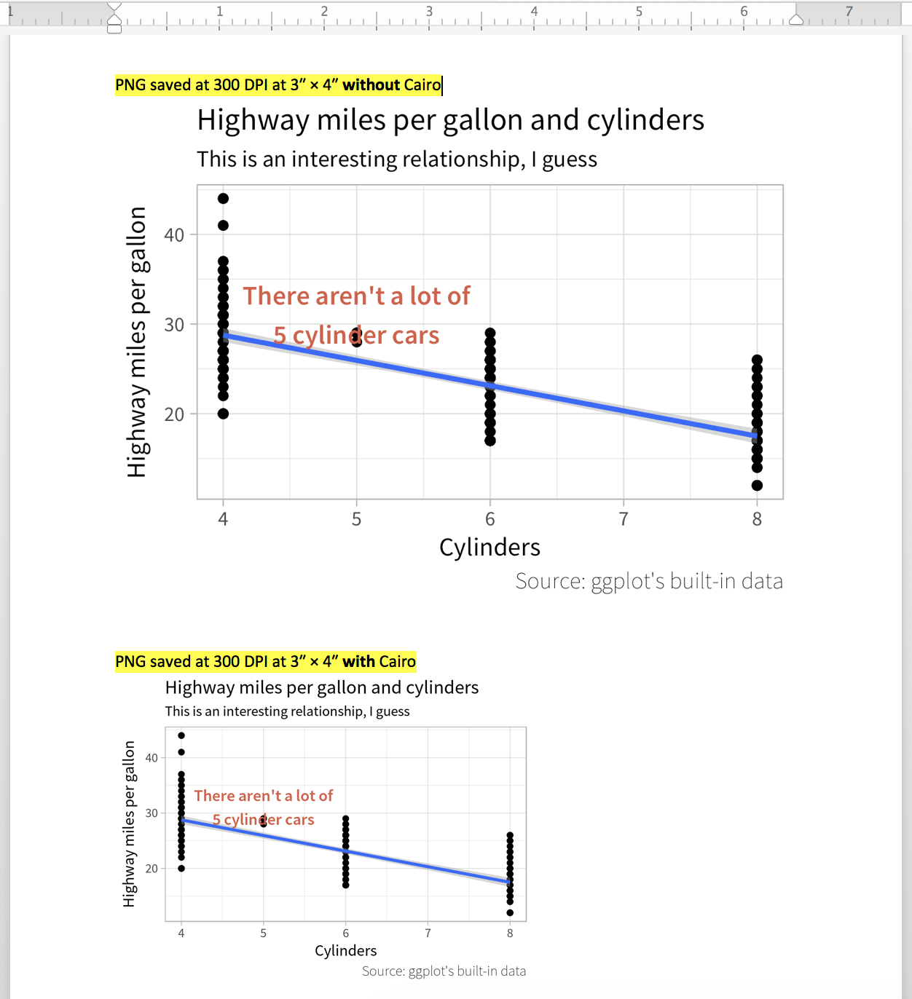
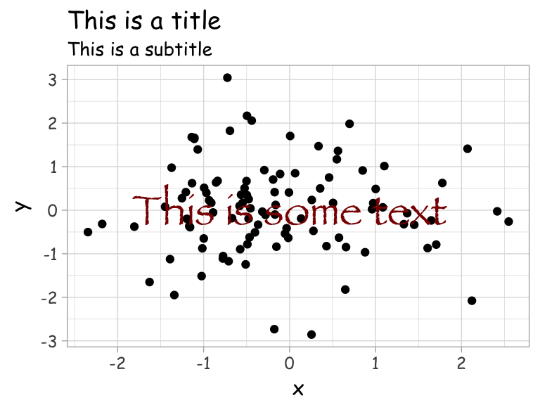

![]()
R and ggplot can create fantastic graphs, but the default Arial/Helvetica font is too boring and standard. You can change the font used in a plot fairly easily three different ways:
- All of the built-in ggplot themes have a
base_familyargument for setting the overall font family for the plot -
element_text()has afamilyargument for changing fonts on individual plot elements -
geom_text()andannotate(geom = "text", ...)have afamilyargument for changing fonts on text layers
For example:
# Load libraries
library(tidyverse)
# Create plot
p <- ggplot(mpg, aes(x = cyl, y = hwy)) +
geom_point() +
geom_smooth(method = "lm") +
annotate("text", x = 5, y = 35, label = "There aren't a lot of\n5 cylinder cars",
family = "Source Sans Pro Semibold", color = "#DC5B44", size = 4) +
labs(title = "Highway miles per gallon and cylinders",
subtitle = "This is an interesting relationship, I guess",
caption = "Source: ggplot's built-in data",
x = "Cylinders", y = "Highway miles per gallon") +
theme_light(base_family = "Source Sans Pro") +
theme(plot.caption = element_text(family = "Source Sans Pro ExtraLight"))
p
However, there are a couple difficulties when using custom fonts like this:
- R on Windows does not automatically see custom fonts and will throw an error if you try to use them.
-
ggsave()on its own cannot correctly save PDF versions of plots with custom fonts—it cannot embed the fonts.
Fixing both of these issues is relatively easy. On Windows, you can either load fonts into R on the fly with windowsFonts(name_of_font_inside_r = windowsFont("Name of actual font")), or you can use extrafonts::load_fonts() from the extrafonts library to permanently load fonts into R’s internal database. A full example of this is included below.
Embedding fonts in PDFs is also fairly easy. Instead of using R’s default PDF-writing engine, you can use the Cairo graphics library (which, nowadays, is conveniently packaged with R). Cairo has full Unicode support and can handle embedding custom fonts just fine. To make ggsave() use the Cairo engine when writing a PDF, specify the device:
ggsave(..., filename = "whatever.pdf", ..., device = cairo_pdf)You can also use Cairo’s PNG engine when writing PNG files. R’s default PNG-writing engine can sometimes have issues with correctly setting the resolution. In theory, if you specify a width and a height and a DPI, ggsave() will generate a file with those dimensions. However, if you place the PNG into Word, PowerPoint, InDesign, or any other programs, the graphic will be too large, for reasons unknown. If you save the graphic with the Cairo library or AGG library though, these programs will respect the size and DPI and place the image correctly.
Since 2022, there’s no need for Cairo PNGs. Starting with ggplot v3.3ish, ggplot’s default PNG-writing engine switched to the AGG library (through the {ragg} package). Unlike R’s default grDevices engine, it creates images that are sized correctly when placed in Word and other programs. This means all the instructions here about using the Cairo PNG device aren’t necessary anymore, unless you really want to use Cairo over AGG.
I personally have stopped using Cairo-based PNGs and use {ragg} instead. I still use Cairo PDFs, since Cairo is still the best (and only?) way to embed fonts in PDFs.
See this post at Jumping Rivers for more details about {ragg}.
I’ve updated this post to show the updated syntax for specifying both AGG and Cairo PNGs in both ggsave() and with knitr.
tl;dr version: the old ggsave(..., type = "cairo") syntax doesn’t work anymore.
To make a 300 DPI PNG with Cairo, you can do this:
# With Cairo
ggsave(..., filename = "whatever.png", ...,
device = png, type = "cairo", dpi = 300)Or use these knitr options:
knitr::opts_chunk$set(dev = "png",
dev.args = list(type = "cairo"))…and for AGG-based version, you can do this:
# With {ragg}
ggsave(..., filename = "whatever.png", ...,
device = ragg::agg_png, res = 300)Or use these knitr options:
knitr::opts_chunk$set(dev = "ragg_png")Or if you use Quarto, you can add this to the YAML settings:
format:
pdf:
knitr:
opts_chunk:
dev: "cairo_pdf"
# For AGG
docx:
knitr:
opts_chunk:
dev: "ragg_png"
dpi: 300
# For Cairo
docx:
knitr:
opts_chunk:
dev: "png"
dev-args:
- "cairo-png"Using the AGG or Cairo PNG libraries makes a significant difference when you use the image in other programs. Notice how the Cairo/AGG-based PNG is actually 4 inches wide in Word, while R’s default PNG takes up the full width of the page and uses a lower resolution:

Finally, if you use R Markdown and knitr, you can specify the Cairo device for each output type in the document metadata:
---
title: "Whatever"
output:
pdf_document:
dev: cairo_pdf
html_document:
dev: ragg_png
---
Here’s how you can use ggplot::ggsave() and Cairo to create PDF with embedded custom fonts and PNGs with correct resolutions:
Full instructions for macOS
The Cairo graphics library should be installed behind the scenes when you install R—you should not need to install any R-specific Cairo libraries or anything for this to work. However, you do need to install an X11 window system first, like XQuartz.
You can verify that you have Cairo support by running the capabilities() function; TRUE should show up under cairo:
capabilities()
#> jpeg png tiff tcltk X11 aqua
#> TRUE TRUE TRUE TRUE TRUE TRUE
#> http/ftp sockets libxml fifo cledit iconv
#> TRUE TRUE TRUE TRUE FALSE TRUE
#> NLS profmem cairo ICU long.double libcurl
#> TRUE TRUE TRUE TRUE TRUE TRUER on macOS should automatically see the fonts you have installed on your computer.
Here’s a full example of loading and using a custom font on macOS:
# Load libraries
library(tidyverse)
# Create sample data
set.seed(1234) # This makes R run the same random draw
df <- data_frame(x = rnorm(100),
y = rnorm(100))
# Create plot
p <- ggplot(df, aes(x = x, y = y)) +
geom_point() +
labs(title = "This is a title",
subtitle = "This is a subtitle") +
annotate("text", x = 0, y = 0, label = "This is some text",
family = "Papyrus", color = "darkred", size = 8) +
theme_light(base_family = "Comic Sans MS")
p
# Save the plot as a PDF with ggsave and Cairo
# R will want to autocomplete cairo_pdf to cairo_pdf() (note the parentheses)
# This will not work with the parentheses; ensure there aren't any
ggsave(p, filename = "example.pdf", device = cairo_pdf,
width = 4, height = 3, units = "in")
# You can also save the plot as a high resolution PNG using
# AGG or Cairo
# With {ragg}
ggsave(p, filename = "whatever.png",
device = ragg::agg_png, res = 300,
width = 4, height = 3, units = "in")
# With Cairo
ggsave(p, filename = "whatever.png",
device = png, type = "cairo", dpi = 300,
width = 4, height = 3, units = "in")Full instructions for Windows
The Cairo graphics library should be installed behind the scenes when you install R—you should not need to install any special Cairo libraries or anything for this to work.
You can verify that you have Cairo support by running the capabilities() function; TRUE should show up under cairo:
capabilities()
#> jpeg png tiff tcltk X11 aqua
#> TRUE TRUE TRUE TRUE FALSE FALSE
#> http/ftp sockets libxml fifo cledit iconv
#> TRUE TRUE TRUE TRUE FALSE TRUE
#> NLS profmem cairo ICU long.double libcurl
#> TRUE TRUE TRUE TRUE TRUE TRUER on Windows cannot see the fonts you have installed on your computer. You can see a list of fonts R does have access to with the windowsFonts() function:
windowsFonts()
#> $serif
#> [1] "TT Times New Roman"
#>
#> $sans
#> [1] "TT Arial"
#>
#> $mono
#> [1] "TT Courier New"You can add all your system fonts to that database by installing the extrafont library and running font_import(). This will take a while, though, and it will only pick up fonts that are currently installed. If you install a font later, R will not see it—you’ll need to run extrafont::font_import() again.
Alternatively, you can load fonts into R on the fly, without loading the full database, using windowsFonts(name_of_font_inside_r = windowsFont("Name of actual font")):
windowsFonts(`Comic Sans MS` = windowsFont("Comic Sans MS"))Once you do this, the font will be loaded:
windowsFonts()
#> $serif
#> [1] "TT Times New Roman"
#>
#> $sans
#> [1] "TT Arial"
#>
#> $mono
#> [1] "TT Courier New"
#>
#> $`Comic Sans MS`
#> [1] "Comic Sans MS"This only takes effect for your current R session, so if you are knitting a document or if you ever plan on closing RStudio, you’ll need to incorporate this font assignment code into your script. If you don’t want to do that, run extrafont::load_fonts() to load all the fonts—once you do this, you won’t need to repeatedly run windowsFonts() to load fonts each time you run a script.
Here’s a full example of loading and using a custom font on Windows:
# Load specific fonts into R's internal database
windowsFonts(`Comic Sans MS` = windowsFont("Comic Sans MS"))
windowsFonts(Papyrus = windowsFont("Papyrus"))# Load libraries
library(tidyverse)
# Create sample data
set.seed(1234) # This makes R run the same random draw
df <- data_frame(x = rnorm(100),
y = rnorm(100))
# Create plot
p <- ggplot(df, aes(x = x, y = y)) +
geom_point() +
annotate("text", x = 0, y = 0, label = "This is some text",
family = "Papyrus", color = "darkred", size = 8) +
labs(title = "This is a title",
subtitle = "This is a subtitle") +
theme_light(base_family = "Comic Sans MS")
p
# Save the plot as a PDF with ggsave and Cairo
# R will want to autocomplete cairo_pdf to cairo_pdf() (note the parentheses)
# This will not work with the parentheses; ensure there aren't any
ggsave(p, filename = "example.pdf", device = cairo_pdf,
width = 4, height = 3, units = "in")
# You can also save the plot as a high resolution PNG using
# AGG or Cairo
# With {ragg}
ggsave(p, filename = "whatever.png",
device = ragg::agg_png, res = 300,
width = 4, height = 3, units = "in")
# With Cairo
ggsave(p, filename = "whatever.png",
device = png, type = "cairo", dpi = 300,
width = 4, height = 3, units = "in")